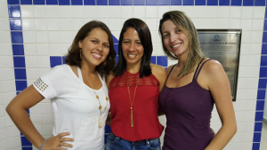

CCET - Centro de Ciências Exatas e Tecnologia
O curso BSI é um dos cursos do Centro de Ciências Exatas e Tecnologia (CCET). Um centro agrega os cursos de uma mesma área, e contém as estruturas administrativas para o funcionamento desses cursos.
O CCET tem como missão:
"Promover o desenvolvimento científico e tecnológico com inovação e compromisso social, na sociedade em geral e na UNIRIO em particular, através de atuação inter e multidisciplinar em ensino, pesquisa e extensão nas áreas de Matemática, Estatística e Informática."
Existem dois importantes núcleos na estrutura do CCET.
NAPE (Núcleo de Assuntos Pedagógicos e Educacionais) - visa auxiliar na organização escolar e curricular dos cursos pertencentes ao CCET, bem como realizar o acompanhamento das situações acadêmicas dos discentes do centro. NAPE
nape.ccet
Andreza, Flávia e Alessandra
NTI (Núcleo de Tecnologia da Informação) - é responsável pela infraestrutura do CCET.
- Gerenciamento dos laboratórios de informática (atualização de softwares, manutenção de hardwares, etc);
- Gerenciamento dos emails UNIRIOTEC (criação, redefinição de senhas, etc);
- Gerenciamento da plataforma Moodle (atualização, criação de contas e disciplinas, etc).

NTI
suporte

Sidney Lucena
sidney
O atual decano do CCET é o Prof. Sidney Lucena
Para mais informações, consulte o site do CCET